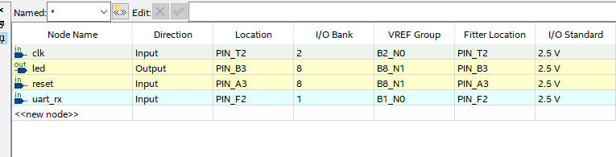

FPGA제작
어셈블리에서 hex 기계어로 변환된 코드를 시리얼로 부터 받아서, 구동하는 프로그램을 VHDL로 작성을 한다.
지금까지 만든 CPU를 이용한다면 구조는 다음과 같습니다. hex 1차 다운로드 → FF FF → 자동 실행 실행 중 새 hexsend.py 전송 → 첫 바이트 수신 순간 CPU 정지 → RAM 주소 0부터 다시 저장 → FF FF 수신 → 새 프로그램 자동 실행
동작과정 설명
CPU 구성 블록 설명
| 구성요소 | 역할 | 저장 데이터 | 주요 동작 |
|---|---|---|---|
| PC (Program Counter) | 현재 실행할 명령어 주소 저장 | 명령어 주소 | 다음 명령어 위치 관리 |
| Program RAM | 프로그램 저장 | 기계어(16비트 명령어) | UART로 다운로드된 프로그램 저장 |
| Instruction Decoder | 명령어 해석 | Opcode, Operand | 명령어 종류 판별 |
| R0 Register | 범용 레지스터 | 연산 데이터 | LOAD, INC, DEC 수행 |
| Delay Block | 시간 지연 | Delay Counter | 지정 시간 동안 대기 |
| GPIO | 외부 핀 제어 | LED 상태 | LED ON/OFF |
| UART RX | 프로그램 다운로드 | 수신 데이터 | PC로부터 프로그램 수신 |
| Boot Loader | 프로그램 적재 제어 | RAM 주소 | RAM 저장 및 실행 시작 |
즉 현재 설계는 UART Bootloader + Program RAM + Tiny CPU 구조로, Quartus 재합성 없이 ASM → HEX → UART 다운로드 → 즉시 실행이 가능한 간단한 MCU 형태입니다.
동작 시나리오
전원인가
│
▼
CPU_LOAD_PROGRAM
│
UART 프로그램 수신
│
FF FF 수신
│
▼
CPU_FETCH
│
▼
CPU_DECODE
│
▼
CPU_DELAY
│
└───────┐
│
▼
CPU_FETCH
실행 중 UART 데이터 수신
│
▼
CPU_LOAD_PROGRAM
│
새 프로그램 수신
│
FF FF
│
▼
새 프로그램 실행
핀테이블
아래와 같이, VHDL에 사용되는 핀을 대한 할당을 한다.

VHDL CODE
library ieee;
use ieee.std_logic_1164.all;
use ieee.numeric_std.all;
entity micom is
port (
clk : in std_logic; -- 50MHz
reset : in std_logic; -- High reset
uart_rx : in std_logic;
led : out std_logic
);
end entity;
architecture rtl of micom is
constant CLK_FREQ : integer := 50000000;
constant BAUD_RATE : integer := 115200;
constant BAUD_CNT : integer := CLK_FREQ / BAUD_RATE;
type ram_type is array (0 to 255) of std_logic_vector(15 downto 0);
signal prog_ram : ram_type := (others => x"0000");
type uart_state_type is (
UART_IDLE,
UART_START,
UART_DATA,
UART_STOP
);
signal uart_state : uart_state_type := UART_IDLE;
signal baud_counter : integer range 0 to BAUD_CNT := 0;
signal bit_index : integer range 0 to 7 := 0;
signal rx_shift : std_logic_vector(7 downto 0) := (others => '0');
signal rx_byte : std_logic_vector(7 downto 0) := (others => '0');
signal rx_valid : std_logic := '0';
signal byte_high : std_logic_vector(7 downto 0) := (others => '0');
signal rx_phase : std_logic := '0';
signal wr_addr : integer range 0 to 255 := 0;
signal cpu_run : std_logic := '0';
type cpu_state_type is (
CPU_LOAD_PROGRAM,
CPU_FETCH,
CPU_DECODE,
CPU_DELAY
);
signal cpu_state : cpu_state_type := CPU_LOAD_PROGRAM;
signal pc : integer range 0 to 255 := 0;
signal inst : std_logic_vector(15 downto 0) := x"0000";
signal opcode : std_logic_vector(3 downto 0);
signal operand : unsigned(11 downto 0);
signal r0 : unsigned(15 downto 0) := (others => '0');
signal zflag : std_logic := '0';
signal delay_counter : unsigned(31 downto 0) := (others => '0');
begin
opcode <= inst(15 downto 12);
operand <= unsigned(inst(11 downto 0));
--------------------------------------------------------------------
-- UART RX
--------------------------------------------------------------------
process(clk, reset)
begin
if reset = '1' then
uart_state <= UART_IDLE;
baud_counter <= 0;
bit_index <= 0;
rx_shift <= (others => '0');
rx_byte <= (others => '0');
rx_valid <= '0';
elsif rising_edge(clk) then
rx_valid <= '0';
case uart_state is
when UART_IDLE =>
if uart_rx = '0' then
baud_counter <= BAUD_CNT / 2;
uart_state <= UART_START;
end if;
when UART_START =>
if baud_counter = 0 then
if uart_rx = '0' then
baud_counter <= BAUD_CNT - 1;
bit_index <= 0;
uart_state <= UART_DATA;
else
uart_state <= UART_IDLE;
end if;
else
baud_counter <= baud_counter - 1;
end if;
when UART_DATA =>
if baud_counter = 0 then
rx_shift(bit_index) <= uart_rx;
baud_counter <= BAUD_CNT - 1;
if bit_index = 7 then
uart_state <= UART_STOP;
else
bit_index <= bit_index + 1;
end if;
else
baud_counter <= baud_counter - 1;
end if;
when UART_STOP =>
if baud_counter = 0 then
rx_byte <= rx_shift;
rx_valid <= '1';
uart_state <= UART_IDLE;
else
baud_counter <= baud_counter - 1;
end if;
end case;
end if;
end process;
--------------------------------------------------------------------
-- Loader
-- 실행 중 새 UART 데이터가 들어오면 자동 초기화 후 재다운로드
--------------------------------------------------------------------
process(clk, reset)
variable word_data : std_logic_vector(15 downto 0);
begin
if reset = '1' then
byte_high <= (others => '0');
rx_phase <= '0';
wr_addr <= 0;
cpu_run <= '0';
elsif rising_edge(clk) then
if rx_valid = '1' then
-- CPU 실행 중 새 데이터가 들어오면 기존 실행 중지 후 재다운로드 시작
if cpu_state /= CPU_LOAD_PROGRAM then
wr_addr <= 0;
rx_phase <= '0';
cpu_run <= '0';
byte_high <= rx_byte;
rx_phase <= '1';
else
if rx_phase = '0' then
byte_high <= rx_byte;
rx_phase <= '1';
else
word_data := byte_high & rx_byte;
if word_data = x"FFFF" then
cpu_run <= '1';
rx_phase <= '0';
else
prog_ram(wr_addr) <= word_data;
if wr_addr < 255 then
wr_addr <= wr_addr + 1;
end if;
rx_phase <= '0';
end if;
end if;
end if;
end if;
end if;
end process;
--------------------------------------------------------------------
-- CPU
--------------------------------------------------------------------
process(clk, reset)
begin
if reset = '1' then
cpu_state <= CPU_LOAD_PROGRAM;
pc <= 0;
inst <= x"0000";
r0 <= (others => '0');
zflag <= '0';
delay_counter <= (others => '0');
led <= '0';
elsif rising_edge(clk) then
-- 실행 중 UART 데이터가 들어오면 CPU를 초기화하고 다운로드 모드로 전환
if rx_valid = '1' and cpu_state /= CPU_LOAD_PROGRAM then
cpu_state <= CPU_LOAD_PROGRAM;
pc <= 0;
inst <= x"0000";
r0 <= (others => '0');
zflag <= '0';
delay_counter <= (others => '0');
led <= '0';
else
case cpu_state is
when CPU_LOAD_PROGRAM =>
if cpu_run = '1' then
pc <= 0;
cpu_state <= CPU_FETCH;
end if;
when CPU_FETCH =>
inst <= prog_ram(pc);
if pc < 255 then
pc <= pc + 1;
end if;
cpu_state <= CPU_DECODE;
when CPU_DECODE =>
case opcode is
when x"0" =>
cpu_state <= CPU_FETCH;
when x"1" =>
r0 <= resize(operand, 16);
if operand = 0 then
zflag <= '1';
else
zflag <= '0';
end if;
cpu_state <= CPU_FETCH;
when x"2" =>
r0 <= r0 + 1;
if r0 + 1 = 0 then
zflag <= '1';
else
zflag <= '0';
end if;
cpu_state <= CPU_FETCH;
when x"3" =>
r0 <= r0 - 1;
if r0 - 1 = 0 then
zflag <= '1';
else
zflag <= '0';
end if;
cpu_state <= CPU_FETCH;
when x"4" =>
pc <= to_integer(operand(7 downto 0));
cpu_state <= CPU_FETCH;
when x"5" =>
if zflag = '1' then
pc <= to_integer(operand(7 downto 0));
end if;
cpu_state <= CPU_FETCH;
when x"6" =>
if zflag = '0' then
pc <= to_integer(operand(7 downto 0));
end if;
cpu_state <= CPU_FETCH;
when x"7" =>
led <= '1';
cpu_state <= CPU_FETCH;
when x"8" =>
led <= '0';
cpu_state <= CPU_FETCH;
when x"9" =>
delay_counter <= to_unsigned(to_integer(operand) * 50000, 32);
cpu_state <= CPU_DELAY;
when others =>
cpu_state <= CPU_FETCH;
end case;
when CPU_DELAY =>
if delay_counter = 0 then
cpu_state <= CPU_FETCH;
else
delay_counter <= delay_counter - 1;
end if;
end case;
end if;
end if;
end process;
end architecture;